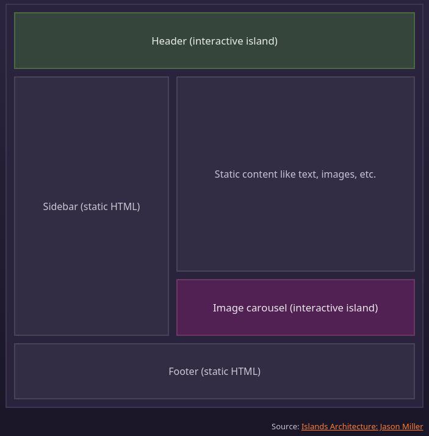

La grande question
Générer les pages côté serveur
Générer les pages côté serveur
Seuls certains éléments sont interactif
Seuls certains éléments sont interactif
Seuls certains éléments sont interactif
---
// Example: Use a dynamic React component on the page.
import MyReactComponent from '../components/MyReactComponent.jsx';
---
<MyReactComponent client:load />On faisait déjà ça avant
<div class="carousel"> </div>
<script>
$('.carousel').slick();
</script>
Même exemple mais plus moderne
<images-carousel></images-carousel>
On éxecute le code, que lorsqu'il y a une requête HTTP
On éxecute le code, que lorsqu'il y a une requête HTTP
export const hello = (
event
) => {
return {
statusCode: 200,
body: "Bonjour" + event.queryStringParameters.name,
};
};
<?php
echo "Bonjour " . $_GET['name'];
Avec des bonnes performances grâce au preloading
PHP seul ne suffit pas
Recharger les pages n'est pas idéal
Ajaxifie tout un site
Interaction client piloté par le serveur
Rend l'HTML dynamique
Permet de créer des éléments HTML personnalisés
Preact, Svelte, Solid...
Comme React, mais le rendu est côté serveur
Notification instantané
Question de perspective